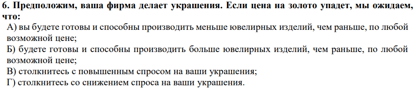
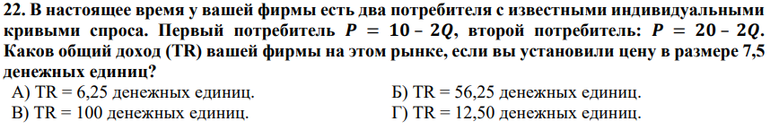
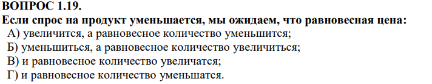
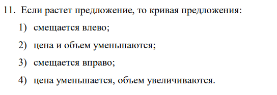
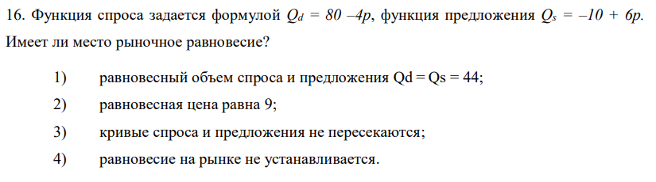

Рыночный механизм для ВСОШ
Задания тестовой части
Ответ : Б, т.к. украшения делают из золота, соответственно цена на этот материал входит в стоимость конечного продукта. Если цена снижается, то будет возможно купить больше материала и соответственно произвести больше товара по более низкой цене.

Ответ : В, т.к. увеличение спроса и предложения сопровождается смещением этих кривых в право по оси Q(кол-во), по оси P(цена) об изменениях точно сказать нельзя, т.к. предложение и спрос увеличили в равной пропорции
Ответ : Б, решение : выразим величину спроса каждого потребителя : Qa =5-0.5P, тогда индивидуальная кривая спроса второго потребителя : Qb=10-0.5Р. Чтобы найти доход (TR), нужно воспользоваться формулой: TR=P*Q, где Q общая величина спроса, которая является суммой индивидуальных спросов, в нашем случае Q=Qa + Qb. Найдем Q = 15 - P , далее найдем TR = (15 - 7.5)* 7.5 = 56.25

Ответ : В, т.к. увеличилось число покупателей на рынке, это привведет к смещению кривой спроса вправо по оси Q, а т.к. имеется технологический прогресс, то это приведет к смещению кривой предложения вправо, соответственно равновесное кол-во увеличится, а выводы о ценене однозначными не получатся.

Ответ : Г, т.к. это стимулирует потребителя покупать более дешевый товар, в нашем случае основной товар.

Ответ : А, т.к. ожидаемо будет возможно приобрести большее кол-во чипсов, по меньшей цене.
Ответ : Г, т.к. уменьшение спроса сопровождается смещением кривой влево, соответственно происходит уменьшение равновесного количества и цены.
Ответ : 34, т.к. рост предложения сопровождается смещением кривой предложения вправо, при этом цена становится ниже, а объем выше.

Ответ : 12, так называемое влияние неценовых факторов. Рост дохода потребителя позволяет ему купить большее количество товаров и услуг, соответственно смещение вправо по оси Q. Ожидаемый рост будущих цен заставляет потребителя "запастись" на будущее, соответственно он начинает покупать больше.
Ответ : 12 Решение : 1. Для определения равновесия необходимо приравнять функцию спроса и предложения и решить получившееся уравнение : 80-4p=-10+6p 10p=90, значит равновесная цена = 9. 2. Найдем равновесные Qs и Qd, подставив в соответствующие формулы равновесную цену. Qd=80-4*9, Qs=-10+6*9, получим Qs=Qd=44